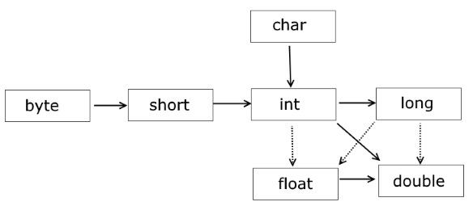

Типы данных. Преобразование типов.
Основные операции.
Объявление переменной
<тип>
<имя_переменной>[ = <значение>];
Пример:
int a;
double b = 0.5;
Целочисленные типы данных
| Тип |
Длина (байт / бит) |
Диапазон |
| byte |
1 (8) |
–128 ... 127 |
| short |
2 (16) |
–32.768 ... 32.767 |
| int |
4 (32) |
–2.147.483.648 ... 2.147.483.647 |
| long |
8 (64) |
-9.223.372.036.854.775.808 ...
9.223.372.036.854.775.807 |
Целочисленные типы данных byte, short, int
Пример:
byte value = 2;
short value = -2;
int value = 1000;
Тип int. Разделение разрядов
int value = 234_567_789;
Тип long
Пример:
long value = 2; //Ошибка
long value = 2l; //Верно
long value = 2L; //Верно и удобно
Числа с плавающей точкой
| Тип |
Длина (байт / бит) |
Диапазон |
| float |
4 (32) |
-1.4*10-45, 3.4*1038 |
| double |
8 (64) |
-4.9*10-324, 1.8*10308 |
Тип float
Пример:
float value = 30.6; //Неверно
float value = 30.6f; //Верно
float value = 30.6F; //Верно
Тип double
Пример:
double z = 1.0;
Тип double. Значения NaN и Infinity
Пример:
double valueI = 12.0 / 0;
System.out.println(valueI); //Infinity
double valueV = Math.sqrt(-4);
System.out.println(valueV); //NaN
Логические значения. Тип boolean
Возможные значения: false и true.
Пример:
boolean value = true;
Символьные значения. Тип char
Пример:
char a=65;
char b ='A';
System.out.println(a); //A
System.out.println((int)b); //65
Символьные значения. Тип char
Пример:
int a = 3;
char b = 'A';
char result = (char) (a + b);
System.out.println(result); //D
Автоматические (неявные) преобразования

Автоматические (неявные) преобразования
Пример:
byte a = 40;
byte b = 50;
byte с = 100;
int d = a* b / с;
Автоматические (неявные) преобразования
Пример:
int a = 2147483647;
int b = a * 2; // от типа int к типу float
System.out.println(b); // -1296
Явные преобразования. Несоответствие типов.
Пример:
byte b = 50;
b = b* 2;
b = (byte) (b* 2);
Ошибка: Error:(5, 14) java: incompatible types: possible lossy conversion from int to byte
Явные преобразования. От чисел с точкой к целому.
Пример:
double a = 56.9898;
int b = (int) a;
System.out.println(b);
Унарные арифметические операции
- префиксный инкремент ( ++value )
- постфиксный инкремент ( value++ )
- префиксный декремент ( --value )
- постфиксный декремент ( value-- )
Унарные арифметические операции
int a = 8;
int b = ++a;
a = 8; b = a++;
a = 8; b = --a;
a = 8; b = a--;
Бинарные арифметические операции
- вычитание («-»)
- сложение («+»)
- умножение («*»)
- деление («/»)
- остаток от деления («%»)
Бинарные арифметические операции
int a = 10; int b = 7;
int i = a / b;
double k = 10 / 4;
double k = 10.0 / 4;
int j = a % b;
Приоритет арифметических операций
- ++ (инкремент), -- (декремент)
- * (умножение), / (деление), % (остаток от деления)
- + (сложение), - (вычитание)
Приоритет арифметических операций
Пример:
int a = 8; int b = 7;
int i = a / b;
int c = a + 5 * ++b;
int d = (a + 5) * ++b;
Операции с присваиванием
Пример:
int c = 3;
c += 5; //c = c + 5 = 8
c -= 2; //c = c – 2 = 6
c /= 3; //c = c / 3 = 2;
Ввод переменных c косоли
Scanner input = new Scanner(System.in);
int x = input.nextInt();
double r = input.nextDouble();
Вывод переменных на косоль
int x = 5;
double y = 7.32;
System.out.println(x + “ ” + y);
System.out.printf(Locale.US, "x = %d, y = %.2f", a + b);
Некоторые функции класса Math
| Тип |
Метод |
Описание |
| double |
abs(double a) |
Возвращает модуль числа |
| double |
exp(double a) |
Возвращает экспоненту аргумента |
| double |
sin(double a) |
Возвращает синус аргумента |
| double |
random() |
Возвращает случайное число от 0.0 (включительно)
до 1 (не включительно) |
Округление
double a = 56.9898;
int b = (int)Math.round(a);
<<<<<<< HEAD
=======
>>>>>>> e12083400cccf02e8184fa743ba883741c0fbbf0